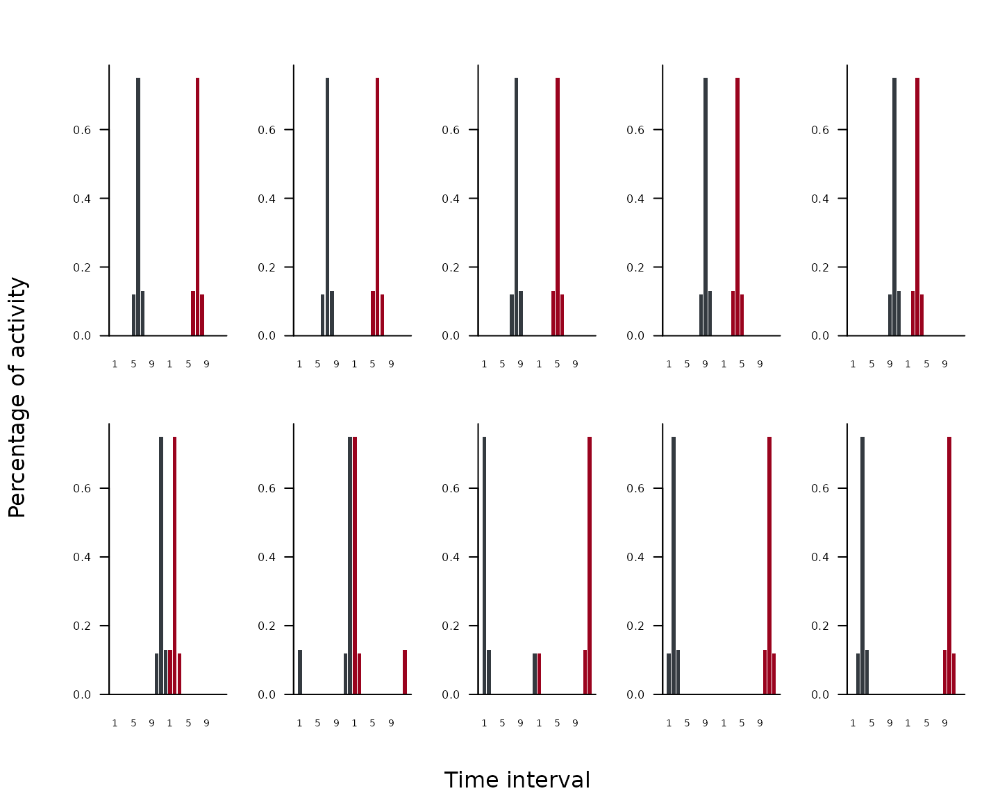
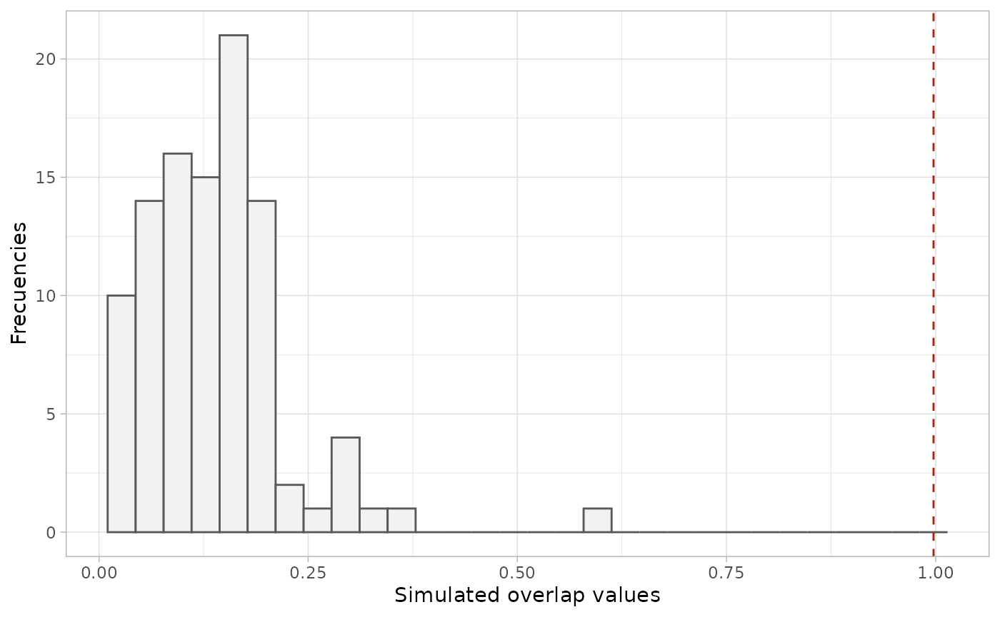

Introduction to rosario
introduction_to_rosario.Rmd1. Description of the package
The rosario package implements a null model analysis to
quantify concurrent temporal niche overlap (i.e., activity or phenology)
among biological identities (e.g., individuals, populations, or species)
using the Rosario randomization algorithm (Castro-Arellano et
al. 2010).
This vignette introduces the main functions and a typical workflow.
2. Hypothetical example dataset
The package includes an example dataset, ex1, with 5
biological identities across 12 time intervals. Time intervals are
assumed to be circular (e.g., hours of the day, months of the year), so
the last interval is treated as adjacent to the first.
Values represent counts of activity events (e.g., detections or captures) per interval.
data("ex1")
ex1
#> INT1 INT2 INT3 INT4 INT5 INT6 INT7 INT8 INT9 INT10 INT11 INT12
#> spp1 0 0 0 0 12 75 13 0 0 0 0 0
#> spp2 0 0 0 0 15 78 7 0 0 0 0 0
#> spp3 0 0 0 0 12 79 9 0 0 0 0 0
#> spp4 0 0 0 0 10 80 10 0 0 0 0 0
#> spp5 0 0 0 0 7 81 12 0 0 0 0 0The rosario function creates the set of cyclic shifts
and their mirror images (reverse order), preserving shape while changing
location along the cycle and maintaining temporal autocorrelation. The
suite of vectors and mirrors represent a complete set of possible
distributions.
rosario_shifts <- rosario(ex1[1, ])
head(rosario_shifts)
#> [[1]]
#> INT1 INT2 INT3 INT4 INT5 INT6 INT7 INT8 INT9 INT10 INT11 INT12 INT12
#> 0 0 0 0 12 75 13 0 0 0 0 0 0
#> INT11 INT10 INT9 INT8 INT7 INT6 INT5 INT4 INT3 INT2 INT1
#> 0 0 0 0 13 75 12 0 0 0 0
#>
#> [[2]]
#> INT12 INT1 INT2 INT3 INT4 INT5 INT6 INT7 INT8 INT9 INT10 INT11 INT11
#> 0 0 0 0 0 12 75 13 0 0 0 0 0
#> INT10 INT9 INT8 INT7 INT6 INT5 INT4 INT3 INT2 INT1 INT12
#> 0 0 0 13 75 12 0 0 0 0 0
#>
#> [[3]]
#> INT11 INT12 INT1 INT2 INT3 INT4 INT5 INT6 INT7 INT8 INT9 INT10 INT10
#> 0 0 0 0 0 0 12 75 13 0 0 0 0
#> INT9 INT8 INT7 INT6 INT5 INT4 INT3 INT2 INT1 INT12 INT11
#> 0 0 13 75 12 0 0 0 0 0 0
#>
#> [[4]]
#> INT10 INT11 INT12 INT1 INT2 INT3 INT4 INT5 INT6 INT7 INT8 INT9 INT9
#> 0 0 0 0 0 0 0 12 75 13 0 0 0
#> INT8 INT7 INT6 INT5 INT4 INT3 INT2 INT1 INT12 INT11 INT10
#> 0 13 75 12 0 0 0 0 0 0 0
#>
#> [[5]]
#> INT9 INT10 INT11 INT12 INT1 INT2 INT3 INT4 INT5 INT6 INT7 INT8 INT8
#> 0 0 0 0 0 0 0 0 12 75 13 0 0
#> INT7 INT6 INT5 INT4 INT3 INT2 INT1 INT12 INT11 INT10 INT9
#> 13 75 12 0 0 0 0 0 0 0 0
#>
#> [[6]]
#> INT8 INT9 INT10 INT11 INT12 INT1 INT2 INT3 INT4 INT5 INT6 INT7 INT7
#> 0 0 0 0 0 0 0 0 0 12 75 13 13
#> INT6 INT5 INT4 INT3 INT2 INT1 INT12 INT11 INT10 INT9 INT8
#> 75 12 0 0 0 0 0 0 0 0 03. Visualize patterns generated by rosario()
function
Use plot_rosario() to visualize hypothetical time-use
distributions produced by rosario() for a single biological
identity. The function plots the first 10 hypothetical set of cyclic
shifts and their mirror images. Each panel shows one hypothetical
time-use distribution, with the cyclic shift in dark gray and its mirror
image in dark red.
plot_rosario(ex1[1, ], cols = 5)
4. Assemblage-wide overlap
Use temp_overlap() to compute the mean of all pairwise
overlaps among rows (biological identities), using the chosen index:
“pianka” or “czekanowski”. This returns the observed assemblage-wide
overlap.
This assemblage-wide summary is most informative when you have three or more biological identities (e.g., individuals, species, or communities), because it captures overall overlap rather than only pairwise comparisons.
temp_overlap(ex1, method = "pianka")
#> pianka
#> 0.9975192
# or
temp_overlap(ex1, method = "czekanowski")
#> czekanowski
#> 0.9535. Null Model Test
To test whether the observed overlap differs from random
expectations, get_null_model() generates a null
distribution of assemblage-wide overlap by repeatedly randomizing the
input matrix using rosario_sample() and recomputing mean
pairwise overlap (via temp_overlap()).
get_null_model() can run simulations in parallel by
setting parallel = TRUE to reduce runtime on multicore
machines. For CRAN checks and maximum portability, this vignette uses
parallel = FALSE.
We recommend using nsim = 1000 for applied analyses, but
runtime depends on hardware and dataset size.
set.seed(1)
mod <- get_null_model(ex1, method = "pianka", nsim = 100, parallel = FALSE)
mod$p_value
#>
#> One Sample t-test
#>
#> data: res[[1]]
#> t = -100.15, df = 99, p-value < 2.2e-16
#> alternative hypothesis: true mean is not equal to 0.9975192
#> 95 percent confidence interval:
#> 0.1202562 0.1543425
#> sample estimates:
#> mean of x
#> 0.13729936. Visualizing the null distribution
Use temp_overlap_plot() to compare the observed overlap
(from temp_overlap()) against the simulated null
distribution (from get_null_model()). The plot shows a
histogram of simulated overlap values and a vertical dashed line
indicating the observed overlap.
temp_overlap_plot(mod)
#> `stat_bin()` using `bins = 30`. Pick better value `binwidth`.